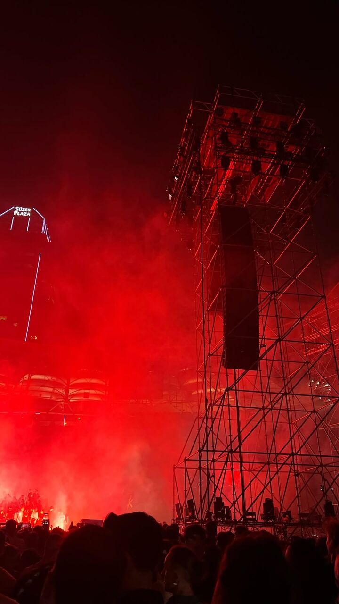
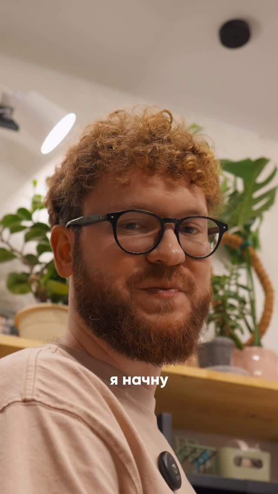
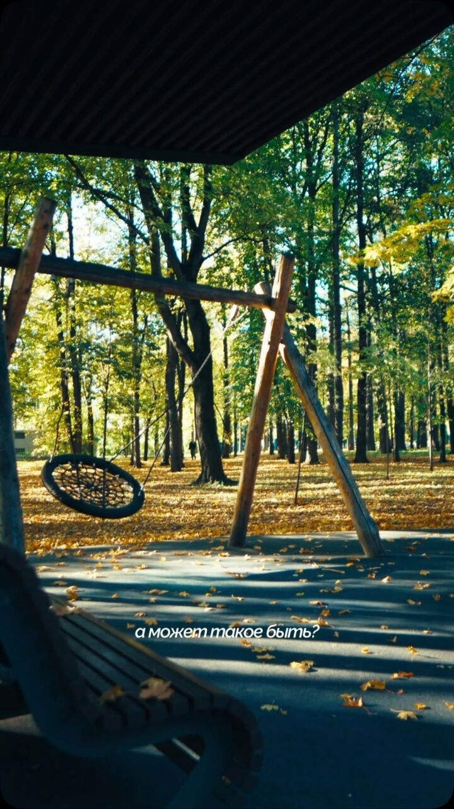
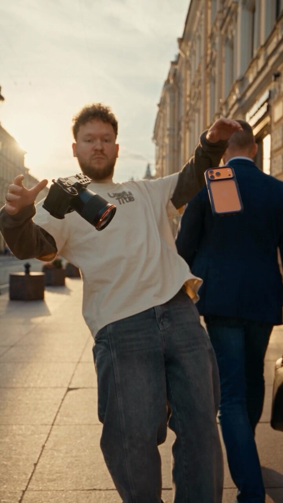
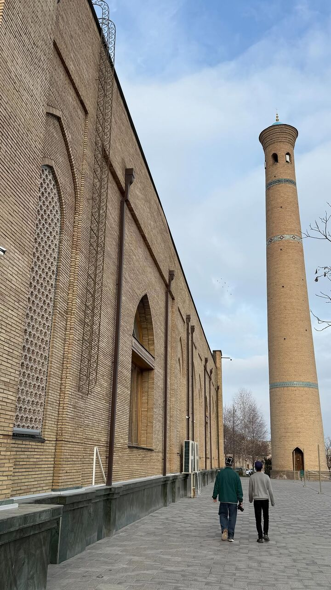
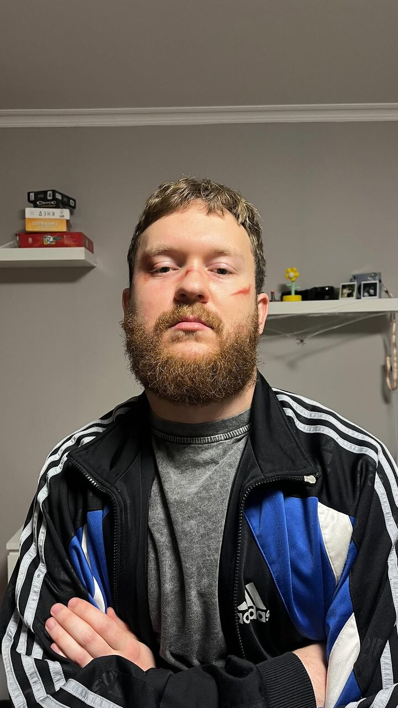
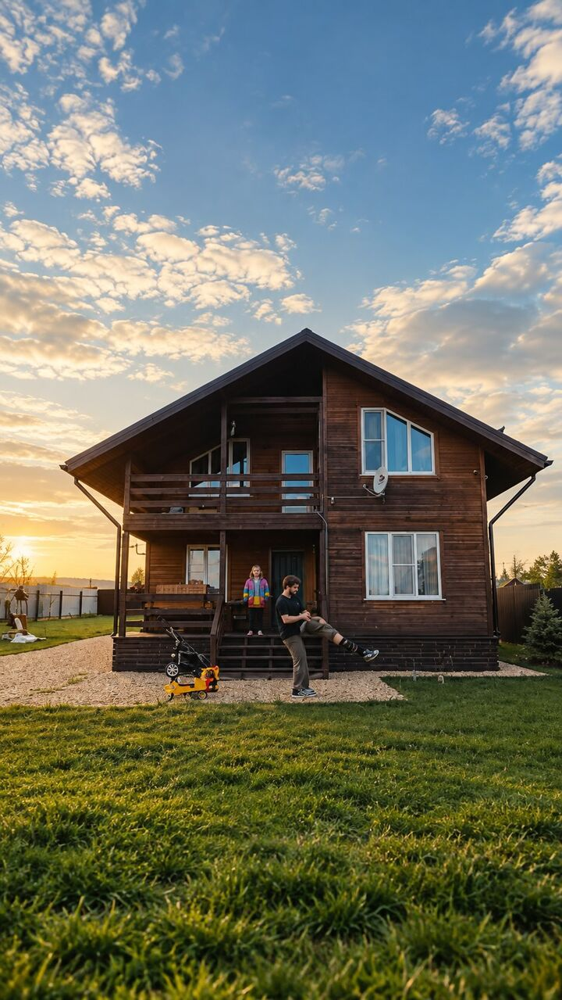
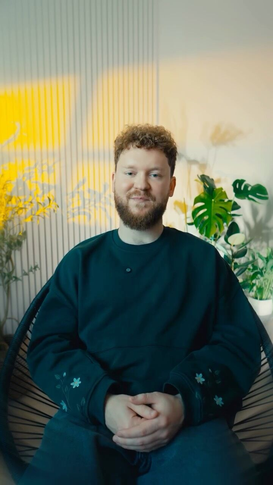

46,1 тыс.
Broken lens
Все спрашивают, не сломан ли объектив. Это тилт.
Я Миша, оператор и монтажёр из Москвы. Делаю бота, который монтирует рилсы из твоих исходников так же, как я.
Подписчиков у меня 2 122. Самый смотримый ролик набрал в двадцать раз больше. Листай вбок.
46,1 тыс.
Все спрашивают, не сломан ли объектив. Это тилт.

11,9 тыс.
Ехал на концерт, а вернулся с чем-то гораздо большим.

9 181
Про жизнь мужчины, отца и мужа. Без фильтров, но с теплом.
3 893
Метро, работа, барбер, домой. Один день за минуту.
3 094
Вторая работа в технике speed ramp. iPhone 13 Pro и After Effects.
2 033
Редко цвет машины настолько задаёт настроение всему ролику.

2 912
Осень, качели и одна фраза снизу кадра.
Мне 28, я из Солнцево. Жена, двое сыновей и большая кухня, которой у нас наконец-то хватает на всех.
Днём снимаю машины для компании, которая возит их по параллельному импорту. Вечером монтирую то, что наснимал за день: поездки, концерты, дачу, будни.
Сетап: Sony ZV-E10 II, стабилизатор DJI RS 4 Mini, монитор Feelworld и объектив TTArtisan Tilt 35 мм, который все считают сломанным.
Остальное пишу в телеграме «нешуточки»: отцовство, съёмки, радости недели.




мои будни
25 / 10 / 26
Бот в телеграме. Кидаешь исходники с телефона, через пару минут забираешь готовый рилс. Вот что происходит внутри.
На старте открыты первые два. Остальные подключаем, когда первые обкатаются на живых роликах.
10–40 клипов за день или поездку превращаются в минуту кино с бит-склейками и подписями от руки.
с первого дня

Говоришь в камеру, бот вырезает паузы и дубли, ставит субтитры и зумы.
с первого дня
Проходка вокруг машины становится роликом со speed ramp под трек. Для автосалонов и перекупов.
весной
Кидаешь ссылку на чужой рилс, бот повторяет его ритм и монтаж на твоих кадрах.
весной
Первый ролик бесплатно, с водяным знаком. Подписку можно отменить в любой момент.
0 ₽
1 ролик с водяным знаком, чтобы увидеть результат на своих кадрах.
690 ₽ в месяц
8 роликов. Режимы «День» и «Голова».
1 490 ₽ в месяц
30 роликов. Все режимы, свой шрифт и цвет.
4 990 ₽ в месяц
120 роликов, режим «Тачка», логотип и несколько аккаунтов. Для СММщиков и салонов.
Не любишь подписки? 5 роликов разово за 490 ₽.
декабрь 2026
Режимы «День» и «Голова». Первые 30 человек монтируют бесплатно и помогают настроить стиль.
весна 2027
Мой цвет в виде LUT, шаблоны и переходы для CapCut, панель для Premiere, которая сама собирает влог.
после 200 участников
Разборы роликов раз в неделю, задание недели, мои исходники для практики. Монтаж ботом внутри.
Первые 30 человек в очереди монтируют бесплатно весь бета-тест. Напиши мне «хочу в Уточку» или подпишись на канал, там будет запуск.